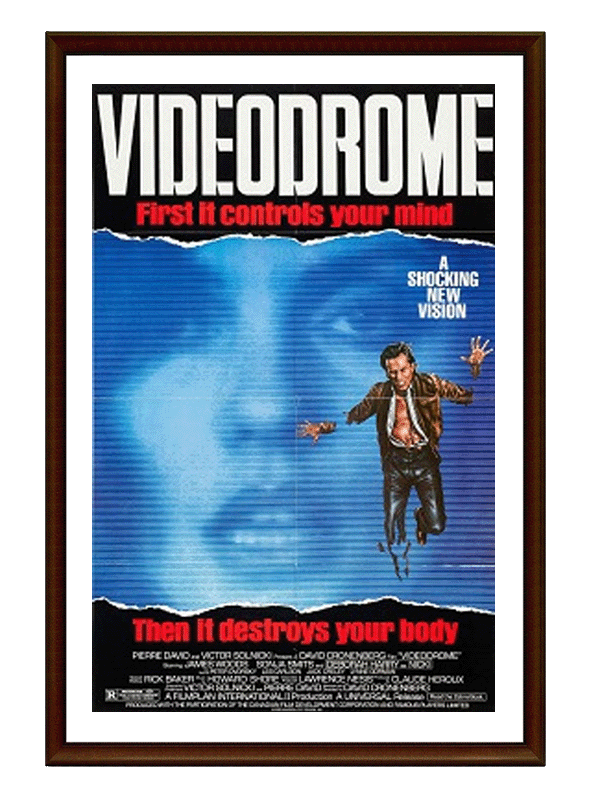
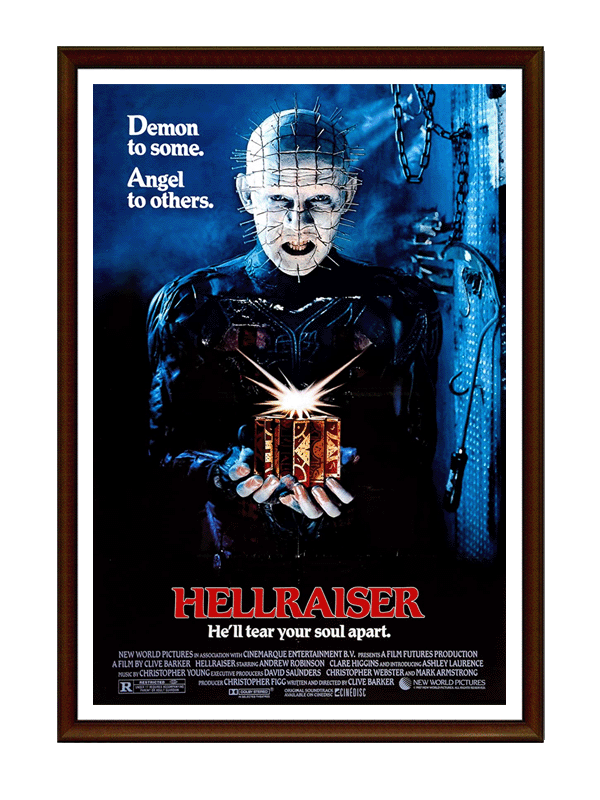
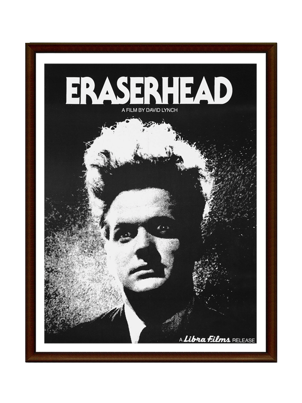
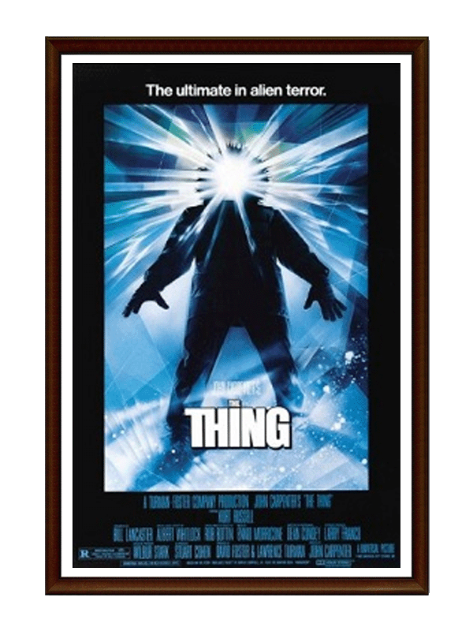

The consistently polished, slim and often fair-skinned bodies seen in major blockbuster films may be appealing to some, but can have detrimental effects on impressionable viewers and their perceptions of their own body image. Whether it’s Ryan Gosling’s soaking wet abs in The Notebook, Dwayne Johnson’s freakishly large pecs in any number of the Fast & Furious movies or the vein-popping screams that Huge Jacked-Man does in X-Men entries featuring Wolverine; Hollywood continues to push unattainably ‘perfect’ bodies down our throat.
But let’s face it: Ryan Reynolds’ round biceps and and stupid kind smile are about as exciting as Wonder-brand white bread. Not everyone can look like that, and not everyone wants to. Some of us would like to see our weird, asymmetrical, messy, fluid-filled bodies represented on the big screen—and there’s no better way to light-heartedly acknowledge the possibilities of our disgusting flesh sacks than through the beauty of body horror.
According to StudioBinder, body horror is “a specific type of bodily imagery in horror films” that “revolves around distortions of the human body.” Body horror as a categorization is both versatile and flexible; one film might be fully-based in body horror, while another might just feature elements of it. Largely through special effects, the sub-genre aims not to destroy the human body, but to transform it into something else entirely and make some sort of social commentary. All-in-all, these films are meant to be gross and disturbing—so viewer beware.
The imagination of directors like Toronto-born David Cronenberg have shown us distortions of the human body that many could never have dreamed of (and that many likely never wanted to). But they might also make you feel just a little better about your stretch marks or uneven eyebrows, because at least you aren’t turning into a half-fly, half-human monster thing with sugar cravings and increased sexual potency. Happy viewing!
Videodrome (1983) dir. by David Cronenberg
 Canadian filmmaker David Cronenberg is undeniably the master of body horror, with numerous iconic entries into the genre. But, to me, none represent his mastery and creativity as well as Videodrome. The film was shot but also takes place in Toronto, and follows Max, the president of a local TV station that specializes in sensational programming. When he comes across a new show dubbed “Videodrome” that depicts anonymous victims being violently tortured and eventually murdered inside a red room. Max broadcasts the show, convinced that it’s the future of television.
Max becomes obsessed with finding the producers of the show which leads him down a rabbit hole featuring unimaginable fusions of his body and mind with digital screens and other media technologies. While James Woods is a trash person with trash politics in real life, he’s the perfect sleazeball to lead this unhinged, surrealist flick. Long live the new flesh.
 Blood Quantum (2019) dir. by Jeff Barnaby
Blood Quantum (2019) dir. by Jeff Barnaby
Blood Quantum had its premiere at the Ryerson Theatre during the 2019 Toronto International Film Festival and is equal parts horror and cultural critique. In the film, a Mi’kmaq reserve discovers that they are the only humans immune to a zombie plague and must decide whether they will offer refuge to outsiders.
This film offers a great variety of gore, guts and body horror through practical special effects, while highlighting how diverse voices can breathe new life into a tired genre. And the lesson? White people fuck everything up.
Raw (2016) dir. by Julia Ducournau
Have any of you vegetarians out there ever wanted to let loose and eat a juicy burger? Have your friends ever pressured you into trying a bite of their juicy filet mignon? That’s exactly what happens in Raw to lifelong veg-eater Julia during her first semester at veterinary school, with murderous consequences. Julia starts developing meat cravings, upgrading from gas station meat to raw chicken to—you guessed it—human flesh.
It may not sound like it on the surface, but Raw is a beautiful celebration of feminine power, sexuality and realizing who you really are—even if that’s a cannibalistic murder. And you know they hate to see a girlboss winning.
 Hellraiser (1987) dir. by Clive Barker
Clive Barker’s ‘80s classic introduced us to the most iconic body-torturer of all-time which spawned an entire franchise: the sadistic-yet-poetic Pinhead. In Hellraiser, a man comes across a puzzle box with the ability to summon sadomasochist monsters from a different realm called “Cenobites.” Leading the Cenobites, Pinhead traps the man and subjects him to otherworldly torture with chains that rip his body apart and locks him in his empty attic. The man is later resurrected as a skinless corpse and enlists his brother’s wife Julia, with whom he had a passionate affair, to lure victims to the attic to re-energize his life force.
Hellraiser is unforgettable, goth and more than a little homoerotic—everything you want in a a campy body horror flick. And the character designs of Pinhead and his gang of Cenobites are some of the best villains to not just represent body horror but also administer it.
 Eraserhead (1977) dir. by David Lynch
I’m undoubtedly biased as David Lynch is my all-time favourite director, but it’s hard to dispute that Eraserhead isn’t one of the most batshit insane directorial debuts of all time. Produced while studying on a scholarship at the American Film Institute, Eraserhead follows Harry Spencer who is just trying to work and survive in his bleak, industrial environment (shown in black and white to add to the eariness). When he’s informed that his girlfriend has given birth to his child, Harry has her move in with him. The twist: the baby doesn’t appear to be human, but instead is some kind of weird mutant alien baby-lizard thing that won’t stop crying.
To this day, viewers and film critics alike have argued and pondered over how Lynch pulled off the special effects to create the lifelike mutant baby, which he has kept secret all these years. Lynch’s script is reportedly based on his daughter’s own birth deformity and the pain he experienced while sitting through her corrective surgeries.
 The Thing (1982) dir. by John Carpenter
John Carpenter’s 1982 masterpiece might just be the quintessential example of body horror at its best. Campy but still terrifying, The Thing follows a group of researchers in Antarctica who witness a helicopter shooting at a sled dog near their base. When they take in the dog, it brutally attacks them, and they discover that the dog is actually an alien that can assume the shape of its victims, including humans.
Panned upon its initial release, The Thing achieved cult-classic status in the years after practical effects, utterly terrifying creature designs and unmatched intensity and paranoia.